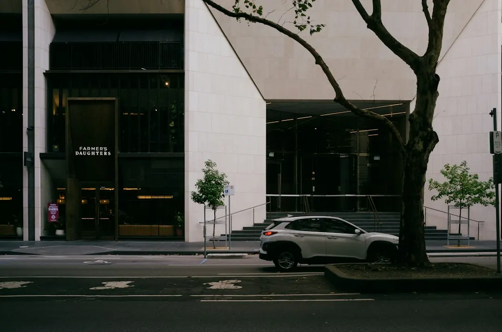

A Melbourne home charger is usually installed on its own circuit in a garage, carport or driveway. The main variables are cable-run length, mounting position, charger type and switchboard condition. Three-phase units can deliver 11 to 22kW, although the vehicle's onboard charger may accept less. Victorian electrical work should be recorded on a Certificate of Electrical Safety, with a copy provided to the homeowner.
For homeowners comparing ev charger installation melbourne options, the practical questions are where the car parks, how far the cable must run, and whether the switchboard can support the chosen unit.
Ev Charger Installation Melbourne Explained
The guide published by Ev Charger Installation Melbourne begins with the place where the vehicle will actually charge. A garage, carport and open driveway can each require a different mounting position, cable route and protection arrangement. Before requesting a quote, note the parking location and estimate its distance from the switchboard.
Wall type also belongs in the first conversation. A short cable run to a suitable wall may be straightforward, while a more distant driveway position can change the installation work. If the charger has already been purchased, record its model name. Otherwise, identify whether you want advice about a universal Type 2 unit, a Tesla Wall Connector or a solar-aware charger.
- Mark where the car normally parks.
- Estimate the route between that position and the meter box or switchboard.
- Record whether the charger will be mounted on a wall or another suitable structure.
- Keep the charger model and installation instructions available if you already own the unit.
Check the switchboard before choosing speed
The switchboard determines more than whether a charger can be attached. Older Melbourne homes, including weatherboard and brick properties, may have boards that were not designed for overnight vehicle charging. Newer homes may already be better prepared for a dedicated circuit or a three-phase unit, but the supply and the car still need to be assessed together.
Three-phase chargers can deliver between 11 and 22kW. That figure describes the charger's possible output, not necessarily the speed the vehicle will use, because the car's onboard charger may accept less. Ask the electrician to explain the available supply, the charger's rating and whether load management or additional protection is needed.
Solar and battery equipment adds another decision. A solar-aware charger may use surplus daytime generation or fit around cheaper tariff windows, but the existing inverter and household setup should be discussed before selecting the equipment. Ask how the proposed charger will work with the system already installed.
Compare quotes on the work included
Two quotes for the same charger can differ without either being wrong. Cable-run length, mounting spot, charger type and switchboard condition are the main cost signals identified in the published guidance. Compare each item line by line instead of comparing only the final amount.
A useful quote should make the physical scope visible. Ask whether it includes the dedicated circuit, cable route, mounting, switchboard work, load management, protection and certification. If the quote assumes an accessible board or a short route, confirm that assumption before work begins.
For a Tesla Wall Connector, clarify whether the installer is fitting a unit you have already bought. For a solar-aware installation, ask which charging behaviour is included and how the existing solar or battery equipment affects the proposal. These questions give you a clearer comparison without assuming that every home needs the same hardware.
Allow for Victorian electrical paperwork
In Victoria, the electrician or Registered Electrical Contractor completing the work must issue a Certificate of Electrical Safety and provide the homeowner with a copy. Keep that document with the charger records after installation, and ask when it will be supplied if it is not handed over at completion.
The wiring installation also needs to meet AS/NZS 3000. The relevant discussion is practical: ask how the proposed circuit, cabling and protection meet the applicable wiring requirements, and which parts of the work are included in the certificate.
Do not treat paperwork as an afterthought. The certificate gives you a clear record of the completed electrical work, while the quote and charger model identify what was installed. Keep all three together for future reference.
Apartments, townhouses and shared parking
Shared parking changes the project before an electrician reaches the cable route. Apartment, unit and townhouse residents may need owners corporation approval, suitable metering and a plan for load sharing. These questions should be raised at the start rather than after equipment has been selected.
First establish who controls the parking space, switchboard access and common-property route. Then ask whether the proposed charger can be separately metered and how simultaneous charging would be managed. A private garage does not automatically mean the electrical path is private.
For a broader overview, see the home charging installation overview for Melbourne. The next action is to provide the suburb, property type, parking location and charger details, if known, so the installation questions are based on the actual site.
- Map the parking spot. Record whether the car uses a garage, carport or driveway and estimate the distance to the switchboard.
- Inspect the supply. Note the apparent age of the board, the main switch, the breakers and whether the property has single-phase or three-phase supply.
- Choose the charger direction. Identify a universal Type 2 charger, Tesla Wall Connector, solar-aware unit or a request for advice.
- Request a detailed quote. Send the suburb, property type, parking location and charger details so the proposed work can be compared clearly.
| Situation | Likely decision | Question for the electrician |
|---|---|---|
| Garage, carport or driveway | Choose the mounting position and cable route | How far is the parking spot from the switchboard? |
| Single-phase supply | Assess a suitable dedicated circuit | Can the existing board carry the charger safely? |
| Three-phase supply | Consider an 11 to 22kW unit | What output can the vehicle's onboard charger use? |
| Solar or battery installed | Consider a solar-aware charger | How will the charger work with the existing inverter? |
| Apartment or townhouse | Plan approval, metering and load sharing | Who approves the route and how is charging measured? |
Common questions
What usually changes the installation cost? Cable-run length, mounting position, charger type and switchboard condition are the main variables. Quotes should be compared line by line so included switchboard and protection work is visible.
Will an 11 to 22kW charger always charge at that speed? No. The vehicle's onboard charger may accept less than the three-phase unit can deliver, so the car and household supply need to be assessed together.
What paperwork should a Victorian homeowner receive? The electrician or Registered Electrical Contractor should issue a Certificate of Electrical Safety and provide a copy to the homeowner.
What should apartment residents check first? Ask about owners corporation approval, metering, common-property cable routes and load sharing before choosing equipment.
This guide covers home charger locations, switchboards, charger output, solar integration, Victorian paperwork, quote comparisons and shared-parking questions.